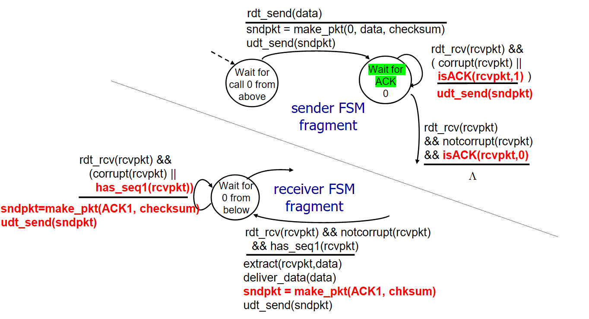

Reliable Data Transfer¶
Reliable Data Transfer is a theoretical transport layer protocol for reliably transferring a stream of packets over an unreliable channel; it is the foundations of TCP.
There have been many version of RDT, with the protocol getting better in newer versions.
- [RDT 1.0] Assumes the underlying channel is reliable, the protocol focuses on creating and forwarding packets.
- [RDT 2.0] Acknowledges there could be errors in the packets, introduces
ACKandNACKpackets to either validate or invalidate the packets. - [RDT 2.1] Acknowledges the
ACKandNACKpackets could get corrupt themselves. - [RDT 2.2] Removes
NACKpackets, since the protocol could be simpler without them. - [RDT 3.0] Acknowledges the packets could get lost, introduces packet timeout.
RDT uses two finite state machines to manage the sender and the receiver algorithms.
[!danger] Diagrams
All FSM diagrams in this note are subject to future change, as right now I'm just screenshotting them from somewhere else.
RDT 1.0¶
The first version of RDT assumes that the underlying channel is reliable, i.e. nothing will get corrupted or changed. The protocol simply focuses on creating and forwarding the packets.
--- Sender Side ---
- Create packet
- Send packet
- Repeat
--- Receiver Side ---
- Receive packet
- Extract message
- Repeat
[!warning] Flaws
Keep in mind that with RDT 1.0 (which is really UDT) packets could get corrupted or lost, without none of the hosts knowing.
RDT 2.0¶
The second version of RDT acknowledges that the packets could get corrupted, which is why it introduces the ACK (acknowledge) and NACK (negative/not acknowledge) packets.
After sending a packet, the sender must wait an acknowledgement for the sent packet. If the acknowledgement is positive, then the next packet can be sent, otherwise the current packet must be retransmitted.
The receiver, on the other hand, must check that a packet isn't corrupted when it receives it. If the packet is valid then it must send a positive acknowledgment, otherwise it must send a negative acknowledgment.
--- Sender Side ---
- Create packet
- Send packet
- Wait ACK
- If NACK, execute step 2 again
- Repeat
--- Receiver Side ---
- Receive packet
- If packet corrupted, send NACK and go to step 1
- Send ACK
- Extract message
- Repeat
[!warning] Flaws
With RDT 2.0, the ACK and NACK packets could get corrupted or lost, and none of the hosts would know.
For example: - An acknowledgement packet could be lost, thus blocking the communication because the sender would be forever waiting for an acknowledgement. - A NACK could turn into an ACK if corrupted, giving the ok to the sender to send the next packet, even though the receiver still didn't get the current packet correctly. - An ACK could turn into a NACK if corrupted, thus the sender would be sending a duplicate packet, which the receiver would think it being the next packet.
RDT 2.1¶
The first reiteration of the second version of RDT handles the problem that ACK and NACK packets could get lost or corrupted; in particular, it handles duplicates of received packets.
The sender assigns a number to each packet, alternating between 0 and 1, so that the receiver can discard duplicate packets (i.e. if more than one consecutive packets have the same number, keep the first packet only).
[!note] Acknowledgement
Acknowledge packets don't need to report the packet number back, because the acknowledgement packets always refer to the last sent packet.
--- Sender Side ---
- Create packet #0
- Send packet #0
- Wait ACK
- If NACK or corrupted, execute step 2 again
- Create packet #1
- Send packet #1
- Wait ACK
- If NACK or corrupted, execute step 5 again
--- Receiver Side ---
- Receive packet (#0)
- If packet corrupted or packet is #1, send NACK and go to step 1
- Send ACK
- Extract message
- Receive packet (#1)
- If packet corrupted or packet is #0, send NACK and go to step 5
- Send ACK
- Extract message
RDT 2.2¶
RDT 2.2 improves the previous version of RDT by removing NACK packets and identifying ACK packets by the number of the respective data packet.
The only difference with RDT 2.1 is that, instead of sending a NACK packet when receiving a corrupted packet, the receiver must send an ACK packet identified by the number of the last correctly received packet (i.e. the previous). When the sender receives an out-of-order ACK packet, it must resend the packet it just sent (i.e. send packet 1, receive ACK 0, resend packet 1).

--- Sender Side ---
- Create packet #0
- Send packet #0
- Wait ACK
- If ACK #1 or corrupted, execute step 2 again
- Create packet #1
- Send packet #1
- Wait ACK
- If ACK #0 or corrupted, execute step 6 again
--- Receiver Side ---
- Receive packet (#0)
- If packet corrupted or packet is #1, send ACK #1 and go to step 1
- Send ACK #0
- Extract message
- Receive packet (#1)
- If packet corrupted or packet is #0, send ACK #0 and go to step 1
- Send ACK #1
- Extract message
[!warning] Losses
RDT 2.2 still doesn't assume that packets could get lost, it only assumes that packets could get corrupted.
RDT 3.0¶
The third version of the RDT protocol is the last and complete version, it addresses the problem that packets could get lost. Moreover, it introduces pipelining to increase throughput.
The sender, after sending a packet, will wait for a given time for an ACK:
- if the ACK is received then the next packet can be sent;
- if the ACK isn't received then the current packet must be retransmitted.
[!tip] Duplicate Packets
If a packet (either data or ACK) isn't lost but just delayed, then the sender would be transmitting the same packet two times, thus duplicating it; but this isn't a problem, because RDT already handled duplicates starting from version 2.1.
Pipelining¶
Pipelining is a technique used to increase the throughput of RDT. Instead of sending a packet and waiting for the ACK (stop and wait), the sender may send a window of packets altogether, removing all the back-and-forth created by acknowledging every packet with stop and wait.
To identify and acknowledge them, the packets aren't marked with 0 and 1 only, but a whole range of integers is used.
Go-Back-N¶
Go-Back-N creates a window of transmittable packets that can be sent at the same time. Instead of acknowledging every packet singularly, packets are acknowledged cumulatively: the receiver will send the ACK for the last packet in a sequence, meaning it received correctly all the previous packets.
--- Sender Side ---
- Keeps a timer for the oldest non-ACK'ed packet (a.k.a.
send_base); - Can send all packets in the current window (from
send_basetosend_base + window_size); - If an ACK for packet
n >= send_baseis received, then slide the window to start atn+1; - On
send_basetimeout, retransmit the whole window.
--- Receiver Side ---
- ACK the latest packets such that there aren't any unreceived packets before;
- If an out-of-order packet is received, it could be either buffered or discarded.
Selective Repeat¶
Selective Repeat creates a window of transmittable packets that can be sent independently, which the receiver has to acknowledge one-by-one.
--- Sender Side ---
- Keeps a timer for every non-ACK'ed packet;
- Can send all packets in the current window (from
send_basetosend_base + window_size); - If an ACK for packet
send_baseis received, then slide the window to start atsend_base+1; - On a packet timeout, retransmit the single packet.
--- Receiver Side ---
- ACK every packet received included in the window;
- If an out-of-order packet is received, buffer it (by the previous point it must be ACK'ed).